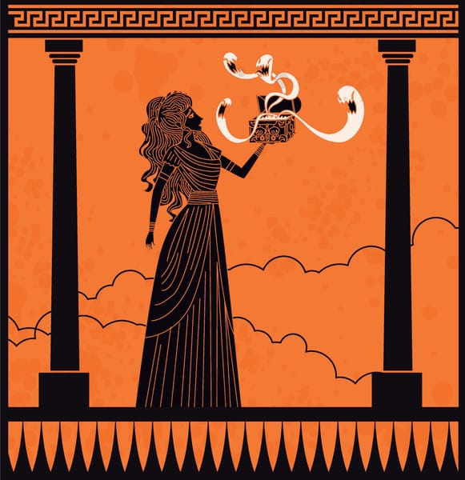
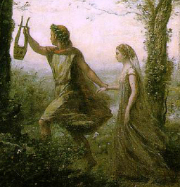
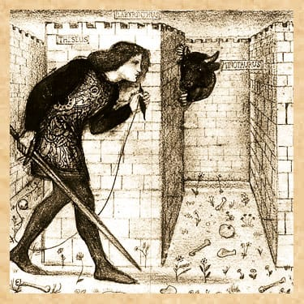
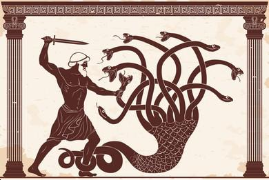
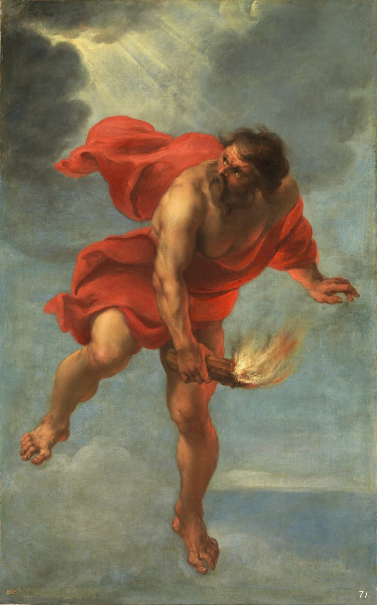

Los Mitos Griegos mas populares
Los mitos son relatos que narran sobre acontecimientos sobrenaturales y que como explicacion de distintas cosas.
El mito de Pandora: Pandora, la primera mujer creada por los dioses, abre una caja (o jarra) que libera todos los males del mundo, dejando solo la esperanza dentro. El mito de Pandora: Pandora, la primera mujer creada por los dioses, abre una caja (o jarra) que libera todos los males del mundo, dejando solo la esperanza dentro. El mito de Pandora: Pandora, la primera mujer creada por los dioses, abre una caja (o jarra) que libera todos los males del mundo, dejando solo la esperanza dentro.

Atalanta y la carrera: Atalanta, una cazadora rápida, acuerda casarse solo con quien pueda vencerla en una carrera; Hipómenes gana con la ayuda de manzanas doradas lanzadas por Afrodita para distraerla.

El juicio de Paris: Paris, príncipe de Troya, elige a Afrodita como la diosa más hermosa en un concurso, lo que desencadena la Guerra de Troya.

Dédalo e Ícaro: Dédalo, un inventor, crea alas de cera para él y su hijo Ícaro, pero Ícaro vuela demasiado cerca del sol, derritiendo las alas y cayendo al mar

Perseo y Medusa: Perseo, con la ayuda de los dioses, mata a Medusa, una gorgona cuyo mirar convierte a las personas en piedra, y usa su cabeza como arma.

Narciso y Eco: Narciso, un joven hermoso, se enamora de su propia imagen reflejada en el agua y muere, mientras Eco, una ninfa que solo puede repetir las palabras de otros, se consume por su amor no correspondido.

Orfeo y Eurídice: Orfeo, un músico talentoso, viaja al inframundo para recuperar a su esposa Eurídice, pero la pierde para siempre al desobedecer la condición de no mirarla hasta salir.

El rapto de Perséfone: Hades, dios del inframundo, secuestra a Perséfone, hija de Deméter, provocando el ciclo de las estaciones cuando ella pasa parte del año en el inframundo y parte con su madre.

El viaje de Odiseo: Odiseo, rey de Ítaca, enfrenta numerosas aventuras y desafíos en su largo viaje de regreso a casa después de la Guerra de Troya, descrito en "La Odisea" de Homero.

Teseo y el Minotauro: Teseo, príncipe de Atenas, entra en el Laberinto de Creta y mata al Minotauro, un monstruo mitad hombre mitad toro.

Hércules y sus 12 trabajos: Hércules, hijo de Zeus, debe completar 12 trabajos imposibles como penitencia, que incluyen matar al León de Nemea y capturar al Jabalí de Erimanto.

Prometeo y el fuego: Prometeo roba el fuego de los dioses para dárselo a la humanidad, lo que le vale un castigo eterno de Zeus.

Zeus y el Monte Olimpo: Zeus, el rey de los dioses, reside en el Monte Olimpo, donde gobierna sobre todos los dioses y humanos.